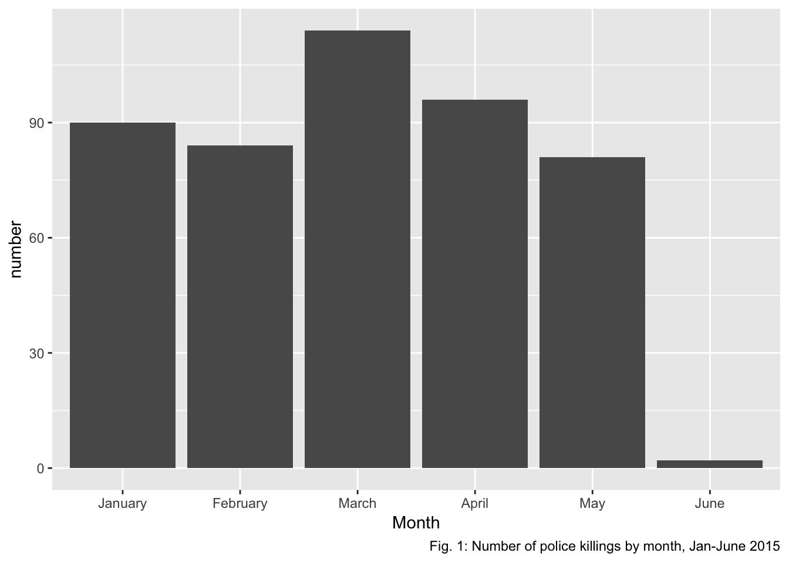

Time-dependent analysis
Nathalie Fadel
11/30/2018
Data import and cleaning
raw_data = read_csv("https://raw.githubusercontent.com/fivethirtyeight/data/master/police-killings/police_killings.csv") %>%
janitor::clean_names()## Parsed with column specification:
## cols(
## .default = col_character(),
## day = col_integer(),
## year = col_integer(),
## latitude = col_double(),
## longitude = col_double(),
## state_fp = col_integer(),
## county_fp = col_integer(),
## tract_ce = col_integer(),
## geo_id = col_double(),
## county_id = col_integer(),
## pop = col_integer(),
## h_income = col_integer(),
## county_income = col_integer(),
## comp_income = col_double(),
## county_bucket = col_integer(),
## nat_bucket = col_integer(),
## urate = col_double(),
## college = col_double()
## )## See spec(...) for full column specifications.clean_data = raw_data %>%
mutate(month = factor(month, levels = c("January", "February", "March", "April", "May", "June", "July", "August", "September", "October", "November", "December")),
year = as.integer(year))
date_data = clean_data %>%
mutate(month = as.integer(month)) %>%
mutate(date = paste(month, day, year, sep = "-")) %>%
mutate(date = as.Date(date, "%m-%d-%Y"))Read in csv file, made month a leveled factor variable, then made year an integer variable. This data was read into figure 1 to be grouped by month. Then, this dataset was changed to make month an integer, created a new date column, and formatted date as numerical month-day-year. This data was then used to make figure 2.
Plots
clean_data %>%
group_by(month) %>%
summarise(total_killed = n()) %>%
ggplot(aes(x = month, y=total_killed)) +
geom_col(size = 3) +
labs(x = "Month", y = "number",
caption = "Fig. 1: Number of police killings by month, Jan-June 2015") 
date_data %>%
group_by(date) %>%
summarise(total_killed = n()) %>%
ggplot(aes(x = date, y=total_killed)) +
geom_line(size = 0.5) +
labs(x = "date", y = "number",
caption = "Fig. 2: Number of police killings over time, Jan-June 2015")
As we can see from figures 1 and 2, March 2015 had the highest number of killings out of this 6 month time period, peaking late in the month.